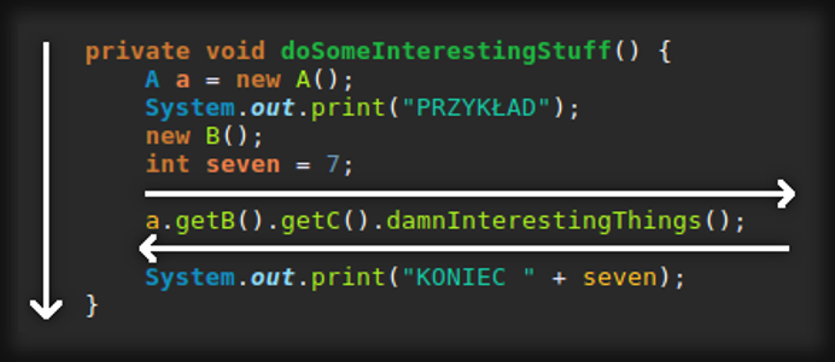

Debuggowanie
kodu w JVM
Dariusz Olszowy
Ciut teorii
Debuggowanie JVM
> zatrzymanie JVM w wybranym momencie
> wykonywanie kodu linia po linii
> możliwość edycji i wgląd do zmiennych
> wplatanie / wykonywanie kodu
Eclipse vs JVM
Nic za darmo
-agentlib:jdwp=transport=dt_socket,suspend=n,server=y,address=36203...mają wpływ na wydajność pracy VM !
...debuggowanie = zawieszanie pracy VM !
LOKALNIE - TAK ; na 'PRODUKCJI' - NIE !
Breakpoint-y (BP)
...definiują zdarzenia prowadzące do wstrzymania wątku JVM i przejęcie sterowania przez debuggera
...najczęściej : zdarzenie dojścia do wskazanej linii kodu LUB wejśćie / wyjście z metody
...rzadziej : akcje odczytu/zapisu zmiennej klasowej lub wystąpienie wyjątku
Dodawanie podstawowych BP
> dwu-klik w linijce z wykonywalnym kodem
> gdy w nagłówku metody : możliwość wyboru momentu BP metody (entry/exit)
> gdy w linii z definicją zmiennej klasowej : możliwość wyboru zdarzenia dot. zmiennej (odczyt/zmiana wartości); tzw. 'watchpoint'
! Oglądasz Eclips-owe 'Jak dodawać podstawowe BP' !
Nawigacja
(kierunki)
Nawigacja
podstawowe kroki
(gdy już się zatrzymasz)
 |
przejście do kolejnego breakpoint-u |
| przejście do kolejnej linii kodu | |
 |
przejście w głąb kodu (wywołania metody) |
| powrót z głębin kodu (do miejsca wywołania metody) |
Przykład 1
Podstawowa nawigacja
Udogodnienia
> Step filter  : pozwala zdefiniować klasy lub całe pakiety, które będą pomijane podczas debuggowania (javax.*, java.util.*).
: pozwala zdefiniować klasy lub całe pakiety, które będą pomijane podczas debuggowania (javax.*, java.util.*).
> Run to line : pozwala na natychmiastowe przejście do wskazanej kursorem linii.
> Step into selection : pozwala 'wejść' we wskazaną kursorem metodę; np:
a.getB().getC().doIt().fire()
Widok 'Debug'
> JVM, których nasłuchujemy w trybie debugg
> wszystkie wątki działające w ramach JVM
> zawieszony wątek, w ramach którego debuggujemy wraz ze stosem ramek oraz lock-ami, które posiada
 Drop to frame
Drop to frame
Pozwala cofnąć się do początku bieżącej ramki: przywracany jest stan zmiennych a sterowanie wraca do 'początku' ramki.
! Efekty wywołań metod ('efekty uboczne') nie są magicznie cofane...
Przykład 2
Cofanie się do początku wszechrzeczy ramki
Przegląd stosu ramek
Podgląd zmiennych
> Widok 'Variables' : służy do inspekcji zmiennych oraz ich struktur
> Widok 'Expressions' : służy do automatycznej ewaluacji wyrażeń opartych na zmiennych
! Kontekstem tych widoków jest aktualna ramka; widoki zmieniają się wraz ze wskazaniem lub przejściem do innej ramki.
Udogodnienia
> Podgląd zmiennej po najechaniu kursorem
> Opcja 'Inspect' (również pod PPM)
> Opcja 'Instances count' (również pod PPM)
> Opcja 'All instances' (również pod PPM)
> Opcja 'All references'
> Przełączanie 'na' inne ramki ze stosu
Przykład 3
Inspekcja zmiennych
Details Formatter
...jest to swoisty 'toString()' używany do wyświetlania użytecznego podglądu obiektu podczas debugowania.
Alternatywa dla: 'Object@ba8a1dc'
! Dostępne w 'Preferences' -> 'Debug' lub pod PPM na obiekcie / klasie w edytorze lub widoku 'Variables'
Modyfikacja zmiennych
w kontekście aktywnej ramki
...widok 'Variables'
'Variables' : mod. typu prymitywnego
'Variables' : prosta podmiana obiektu (oraz jego zmiennych)
'Variables' : złożona podmiana obiektu
Po co to komu?
> reprodukcja błędów
> sterowanie przepływem kodu aby osiągnąć zamierzony cel (np. odtwarzanie scenariuszy testowych)
> uniezależnienie się od cudzych implementacji (oraz błędów w kodzie)
> testowanie kodu
Przykład 4
Modyfikacja zmiennych
Wykonywanie kodu
w kontekście aktywnej ramki
...widok 'Display' lub pod PPM
Sandbox 'Display'
...jest miejscem, w którym możemy wykonać bądź zewaluować dowolny kod - również taki ze 'skutkami ubocznymi'.
...kluczowe są ikony  oraz
oraz  służące do wykonania zaznaczonego w oknie kodu
służące do wykonania zaznaczonego w oknie kodu
! Opcja 'execute' jest też dostępna dla zaznaczonego tekstu w standardowym edytorze pod PPM
Force return
(z poziomu widoku 'Display')
...pozwala wymusić natychmiastowe zwrócenie wskazanej wartości przez aktywną metodę (ramkę)
! Opcja 'force return' jest też dostępna pod PPM w kilku miejscach dla metod typu 'void'
A to po co komu?
> po to samo po co podmiana zmiennych
A szczególnie:
> do prototypowania rozwiązań problemów
> do wykonywania skomplikowanych / masowych modyfikacji (np. dla całych kolekcji itp.)
Przykład 5
Uruchamianie kodu oraz 'force return'
Breakpointy cz.II
Breakpointem, poza przejścia do konkretnej linii kodu, może być:
> dostęp lub modyfikacja zmiennej klasowej
> wystąpienie wyjątku wskazanego typu
'Watchpoint' : śledzenie dostępu do zmiennej
> dodanie takiego BP jest identyczne do standardowego - dwuklik; różnicą są opcje oraz ikonka
> można wskazać czy wstrzymanie JVM ma nastąpić w momencie modyfikacji czy też dostępu do zmiennej
> analiza stosu ramek pozwala szybko określić źródło modyfikacji / dostępu
'Exception BP'
reakcja na wyjątek
! Dodanie tego BP jest możliwe jedynie w widoku 'Breakpoints'; szukaj ikony 
Przykład 6
'wyjątkowy' BP
;)
Warunkowe BP
Warunek przypisany do BP musi być wyrażeniem, które ewaluuje się do wartości true / false.
Do zatrzymania JVM dojdzie jedynie gdy warunek zostanie spełniony!
! Warunek można dodać we 'właściwościach' BP dostępnych w widoku 'Breakpoints' lub pod PPM symbolu BP
! Warunki mogą posiadać skutki uboczne; mogą być blokiem kodu zakończonym wyrażeniemreturn true/false.
Przykład 7
warunkowe BP
Zdalne debuggowanie
Przygotowania:
> uruchomienie dowolnego JVM z odpowiednimi parametrami VM
-agentlib:jdwp=transport=dt_socket,suspend=n,server=y,address=XYWZ
> połączenie do JVM klientem - debbugerem czyli Eclips-em
> BP zdefiniowane w Eclipse zostaną zsynchronizowane ze zdalną JVM
> po połączeniu 'szturchnij' zdalną JVM - musi wykonać linię kodu z jednym z BP
> po powyższym zdalna JVM przekaże sterowanie debuggowaniem do Eclipse
! Oglądasz Eclips-owe 'Jak połączyć się debuggerem do zdalnej JVM' !
Przykład 8
połączenie do działającej JVM z opcją
-agentlib:jdwp=transport=dt_socket,suspend=n,server=y,address=36203
Przykład 9
Połączenie do Wildfly / JBoss
Problemy ze źródłami
> gdy, na zdalnej JVM, przejdziemy do linii kodu, którego nie posiadamy w Eclipse
> gdy posiadamy inną wersję kodu względem tego po którym nawigujemy w zdalnej JVM
Rozwiązanie I : dodanie zależności do POM-a projektu powiązanego z debuggerem
Rozwiązanie II : dodanie źródeł w sekcji 'Source Lookup'
TRIKI
TRIK Automatyczne wykonywanie kodu w BP
> Warunki dla BP mogą być blokami kodu - na ich końcu nalezy zwrócić true lub false.
> Kod przed instrukcją return może być dowolny.
> Gdy blok będzie zwracał na sztywno false - nie dojdzie do zatrzymania JVM ale pozostały kod z bloku automatycznie zostanie wykonany!
Przykład
Automatyczne wykonywanie kodu w BP

TRIK Trigger BP
> 'Trigger' jest cechą BP a nie jego typem!
> Po dodaniu tej cechy, pozostałe BP zostają 'wyciszone' i oznaczone literą 'T'
> Te pozostałe BP zostaną automatycznie aktywowane gdy JVM trafi na trigger BP...
> ...a nasz trigger BP zostanie dezaktywowany!
> Trigger BP służy do automatycznego aktywowania grupy BP dopiero w wybranym momencie / sytuacji
¯\_(ツ)_/¯
U mnie działa!
> Upewnij się że masz zainstalowany plugin Eclipse-Class-Decompiler, który bdb działa podczas dekompilacji źródeł podczas debuggowania; ściągniesz go stąd; powinien mieć włączony tryb 'debugg'.
> Jeżeli kolejne 'uruchomienie' aplikacji nie przynosi skutku - upewnij się, że poprzednie 'uruchomienie' nie 'tkwi' w trybie debugg blokując serwer/wątek.
> Pamiętaj : skrajne różnice kodu na serwerze/JVM oraz tego w Eclipse mogą prowadzić do problemów podczas debuggowania; np. nieuwzględnianie breakpointów przez JVM.
> Pamiętaj : Wildfly to skomplikowany kontener - debuggowanie może prowadzić do niewystępujących 'na produkcji' anomalii (i vice versa).
(╥_╥)
Nic nie rozumiem!
> Korzystaj z kontekstowej pomocy Eclipse
'Help' → 'Show Contextual Help'
...a następnie kliknij w widok, który Cię interesuje.
> Zacznij od prostych ćwiczeń na testowym, lokalnym środowisku (osobny workspace?); potem przejdź do debuggowania serwera aplikacji.
(ﾉ◕ヮ◕)ﾉ*:・ﾟ✧
Jeszcze więcej!
> Sprawdź : 'Window' → 'Preferences' → 'Java' → 'Debug'
> Spróbuj : Widok 'Breakpoints' → PPM → 'Import/Export Breakpoints...'
> Spróbuj : Połączenie zdalne do JVM → Widok 'Debug' → PPM na działającym wątku → 'Suspend' ...przejrzyj ramki.
> Zbadaj : PPM → podczas debuggowania pod prawym przyciskiem kryje się wiele skrótów i opcji!
Prezentacja online
> goo.gl/QQhRh7 <